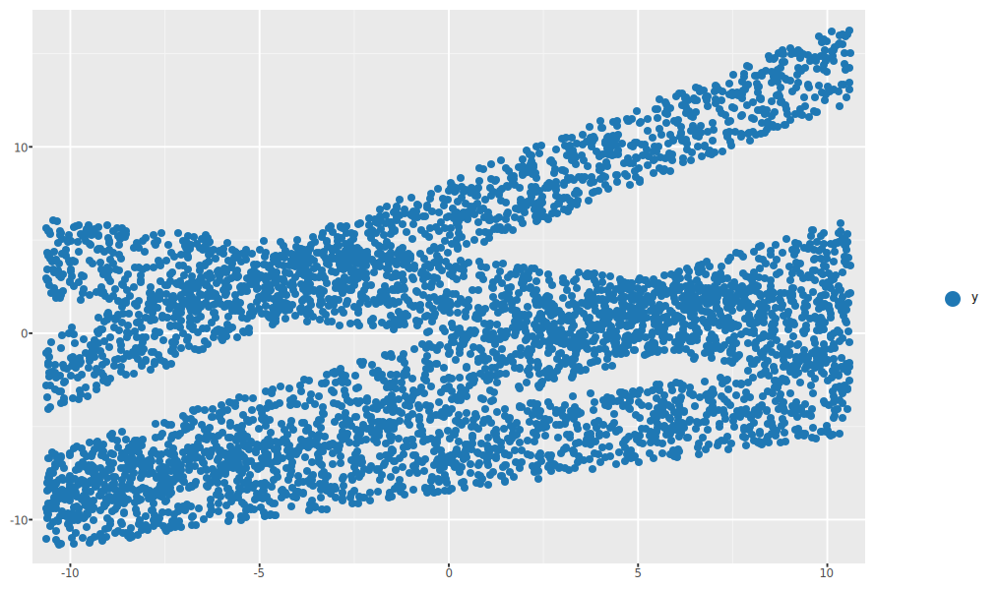
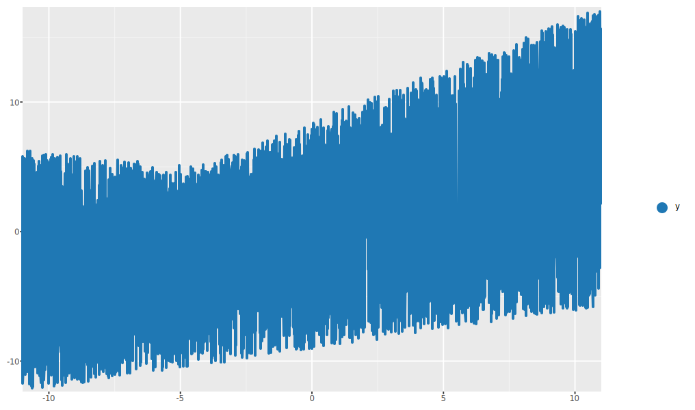
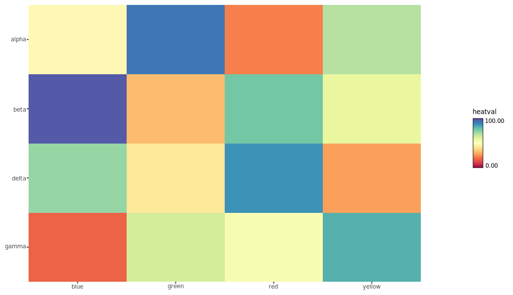
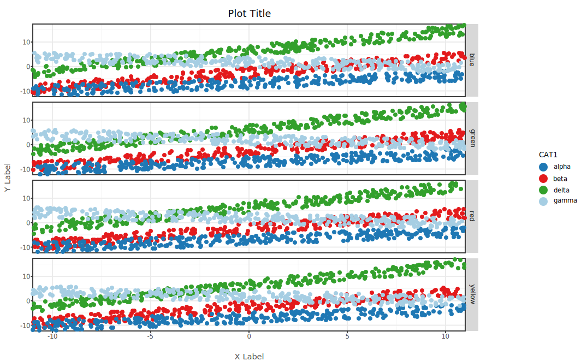
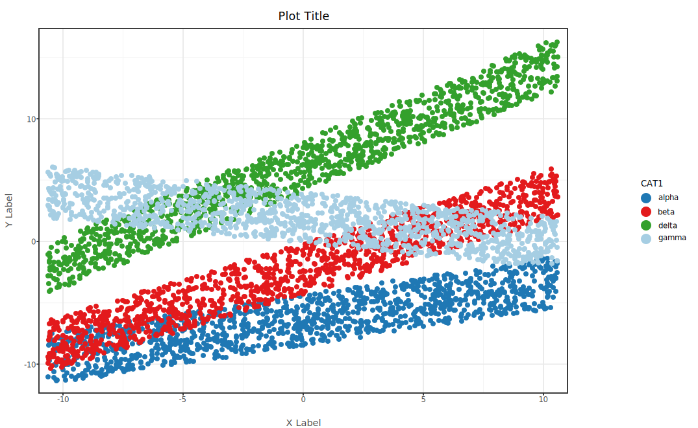
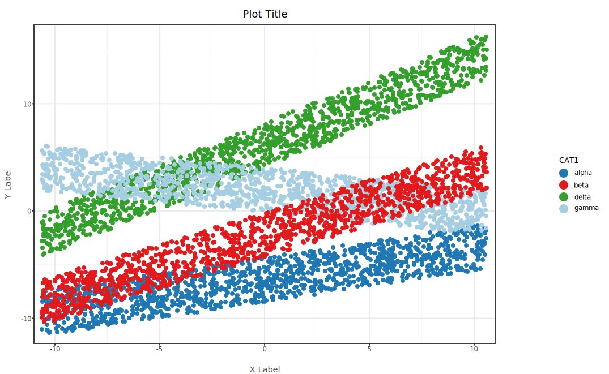
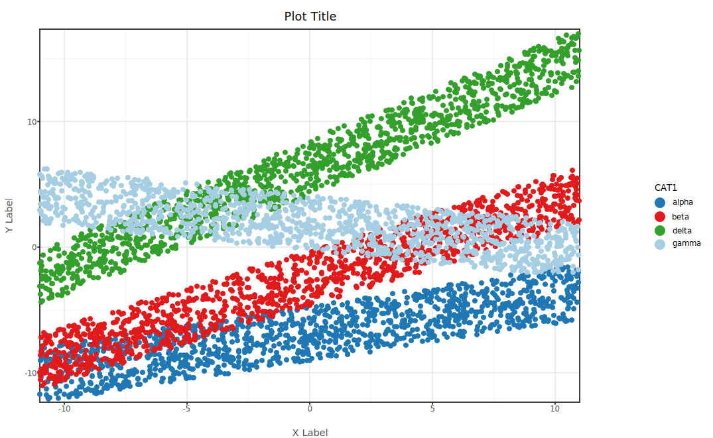

Interactive visual reference for the Tercen GGRS plotting operator
Generated on 2026-02-11 19:55 UTC from commit 6bf5d1f8
About this showcase
This page demonstrates the rendering capabilities of the GGRS Plot Operator,
a Rust-based Tercen operator that generates publication-quality plots from crosstab data.
All images were generated from synthetic test data (5 000 rows, 4 categorical groups) and
rendered against a live Tercen instance.
Chart types — Scatter, line, and heatmap with optional categorical color
Element toggles — Independent control of text, axis lines, major/minor grid
Use the dropdowns and controls in each section to interactively compare options.
Filename shown below each plot for reference.
Chart Types
Scatter Plots

Image not available
scatter_nocolor_cpu_gray_0000.png
Line Plots

Image not available
line_nocolor_cpu_gray_0000.png
Heatmap

Image not available
heatmap_cpu_gray_Spectral_0000.png
Layout
Faceted Plots
Faceting with categorical color (CAT1). Row facets use CAT2 (4 levels),
column facets use CAT2 or CAT3. Rendered with bw theme,
CPU backend, axis labels and plot title.

Image not available
scatter_facet_row_cpu_bw_0000.png
Visual Properties
Marker Shapes
All 26 ggplot2 point shapes (pch 0–25). Rendered with categorical color (CAT1),
bw theme, CPU backend, axis labels and plot title.
Shapes 0–14 are hollow (outline only), 15–20 are filled, 21–25 are filled with black border.

Image not available
scatter_cat_cpu_bw_pch_19.png
Opacity
Global opacity applied to all data geoms (points, tiles, bars, lines).
Non-data elements (axes, labels, grid) stay fully opaque.
Rendered with categorical color (CAT1), bw theme,
CPU backend, axis labels and plot title.
1

Image not available
scatter_cat_cpu_bw_opacity_1.png
Axis Transforms
Scatter plot with categorical color (CAT1), applying the same transform to both axes.
Currently only log, asinh, and logicle
are selectable in the Tercen UI. Rendered with bw theme,
CPU backend, axis labels and plot title.

Image not available
scatter_cat_cpu_bw_tf_none.png
Element Visibility
Element Toggles
Toggle plot elements on/off. All rendered with bw theme,
CPU backend, categorical color, axis labels, and plot title.